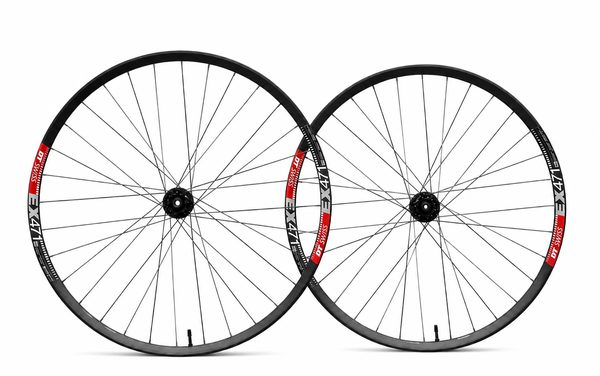
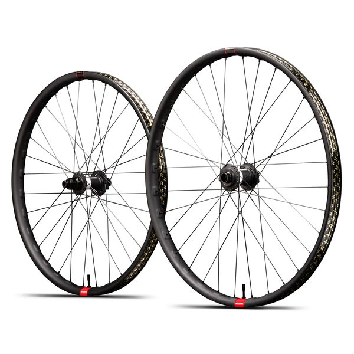

Wheels
Crankbrothers Synthesis DH Alloy 2.0 i9
2636 pts · 9 tracked riders
Compare 29 wheels used by 52 tracked professional downhill riders. See rider count, competition points and associated profiles. The current points leader in this category is Crankbrothers Synthesis DH Alloy 2.0 i9.
2636 pts · 9 tracked riders
1988 pts · 4 tracked riders

928 pts · 5 tracked riders

844 pts · 3 tracked riders



Wheel systems influence durability, handling and serviceability across a downhill race weekend. Compare adoption across riders and teams, while remembering that rims, hubs and spokes can be combined in different builds.
The current RidersFanatics dataset connects 29 products from 13 brands to 52 rider profiles. Crankbrothers Synthesis DH Alloy 2.0 i9 leads by combined rider points and represents 16% of the points attached to this category. That figure measures competitive exposure, not technical superiority.
This table records competitive usage within the RidersFanatics dataset. It does not claim that the first product is universally better, and race prototypes may differ from retail specifications. Counts are recalculated from the rider records at build time, so every category stays connected to its supporting profiles. Page generated from data updated 2026-08-10; see the methodology or report a correction.